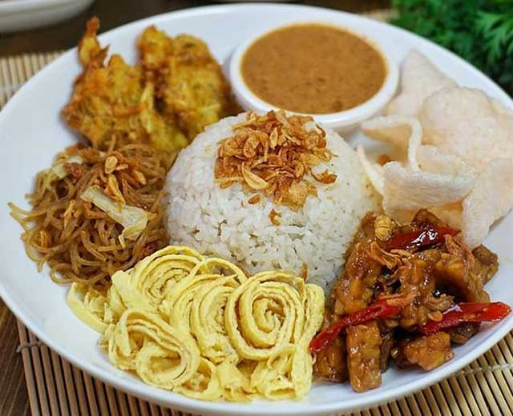

Jakarta Food Delights
Nasi Uduk
Nasi uduk is always every Jakartans favorite breakfast menu. it's a steamed rice cooked in coconut milk with pandan leaves. It's usually served with fried chicken, eggs, tempe, and sambal. You can find Nasi Uduk almost everywhere, sold by a street vendor, or in a fancy restaurant (i personally really miss Jakarta's nasi uduk).
Asinan Betawi

Asinan Betawi is a traditional salad that hails from Jakarta. It consists of cucumber, carrots, cabbage, colorful crackers, and any other toppings depending on the seller. It has a sweet and sour taste with a little bit of spicy taste from chili. I highly recommend eating asinan while served cold, it will be so much better and refreshing.
Kerak Telor
Kerak telor is a traditional omelette from Jakarta. It is made from a mixture of glutinous rice and eggs, and seasoned with a variety of spices. Kerak telor might look ordinary at a glance, but the way how street vendors cook kerak telor is what makes it interesting. Try to visit a Kerak telor vendor while in jakarta, you definitely won't regret it